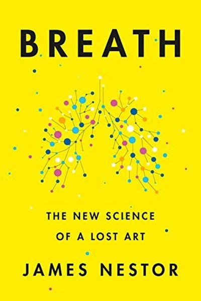

Library › Self-Improvement
Breath — Summary & Key Lessons

The lost art and science of breathing — and the quiet superpower hiding in your nose.
📖 OPEN THE FULL INTERACTIVE BREAKDOWN →🌐 Read it in Hindi, Hinglish, Gujarati, Tamil & 22 more languages — free, with audio.
💡 The Big Idea
Modern humans have forgotten how to breathe: we mouth-breathe, over-breathe and breathe through a narrowed airway, feeding a cascade of problems from snoring to anxiety to chronic disease. Nestor's journey through ancient practices and modern labs lands on a simple fix: breathe less, through the nose, slowly — the way human biology designed it.
🧠 The 6 Key Lessons
Lesson 1: The Nose Is a Filter, Not a Decoration
Chapter 1: The Experiment
Nestor documents experiments showing that nose breathing filters, warms and pressurizes air, boosting oxygen uptake and blood flow, while mouth breathing dries the airway, raises heart rate and worsens everything from snoring to asthma. The nose is engineering; the mouth is an emergency exit — most people live in the emergency exit.
📖 Example: In one controlled study, subjects who switched to mouth breathing developed higher blood pressure and sleep disruption within days, while returning to nasal breathing reversed it. Human skulls evolved with larger sinuses and airways; our mouths have been… Read the full example →
⚡ Do this: Notice your default for one day: nose or mouth? Set a reminder to gently close your lips and breathe through your nose whenever you catch yourself mouth-breathing.
Lesson 2: Breathe Less, Not More
Chapter 2: The Problem of Overbreathing
Modern stress makes us over-breathe — taking 15-20 large breaths a minute when 6-10 slow ones suffice. Overbreathing blows off too much CO2, which paradoxically starves tissues of oxygen (the Bohr effect). Less is more: slower, quieter, lower breathing is the healthiest default.
📖 Example: Cheyne-Stokes patients and panicking people hyperventilate and feel worse, while experienced meditators breathing six times a minute show calmer nervous systems and better oxygen delivery. The goal is not to gulp air but to make each breath count. Read the full example →
⚡ Do this: Practice 5 slow breaths per minute for two minutes, twice daily: inhale 4 seconds, exhale 6 seconds, through the nose.
Lesson 3: The Modern Mouth-Breathing Epidemic
Chapter 3: The Rise of Mouth Breathing
Nestor traces how processed diets, allergies and urbanization have changed our faces and airways — narrower jaws, crooked teeth, sleep apnea — making mouth breathing the modern default. What looks like a cosmetic issue is a respiratory crisis in slow motion, affecting sleep, mood and energy.
📖 Example: Hunter-gatherer skulls show wide jaws and full sinuses; industrialized populations show the opposite, correlating with the explosion of snoring and apnea. Chewing tough food and breathing through the nose early in life literally shapes the airway for decades. Read the full example →
⚡ Do this: Chew your food more thoroughly, eat something firm daily, and check whether you sleep with your mouth open — if yes, investigate mouth tape or a nasal rinse (with care).
Lesson 4: Breath Is the Nervous System's Remote Control
Chapter 4: The Autonomic Switch
Breathing is the only autonomic function you can consciously steer, which makes it a direct lever on the nervous system: long exhales trigger the parasympathetic 'rest' mode, while fast shallow breathing triggers the sympathetic 'fight' mode. You can't order your heart to slow, but you can order your breath — and the body follows.
📖 Example: Subjects practicing extended exhale breathing (6 seconds out) show measurably calmer heart rates and reduced anxiety markers, while rapid breathing induces panic symptoms in minutes. Soldiers and athletes use the same lever to perform under pressure. Read the full example →
⚡ Do this: In your next stressful moment, extend your exhale to twice your inhale for one minute. Watch the body follow the breath.
Lesson 5: Slow Breathing Is Performance Enhancement
Chapter 5: The Athletes and Monks
From free divers to Tibetan monks, the world's most impressive physiological feats share one tool: breath control. Nestor shows that training the breath improves endurance, focus and recovery — it is the cheapest performance enhancer that exists, available to everyone with a nose.
📖 Example: The 'oxygen advantage' athletes and freedivers who hold breath for minutes do so not by hoarding air but by training CO2 tolerance and slow, efficient breathing. Monks practicing pranayama show extraordinary heart-rate control in labs. Read the full example →
⚡ Do this: Add one breath practice to your workout or workday: 10 slow nasal breaths before training, meetings or hard tasks.
Lesson 6: The Body Remembers How — Let It
Chapter 6: The Return
Nestor's conclusion: breathing isn't a technique to master but a default to restore. The body already knows nasal, slow, diaphragmatic breathing — modern habits buried it. Small daily restoration — nose, slowness, rhythm — compounds into better sleep, mood, focus and health. Breathe like your ancestors and your biology will thank you.
📖 Example: After months of restoring nasal breathing and slowing his rate, Nestor's own chronic congestion, snoring and blood pressure improved — the same reported by thousands who followed the practices. No supplements, no gym: just restoring the body's factory… Read the full example →
⚡ Do this: Pick one breathing practice (nasal default, slow exhale, breath-hold walks) and commit to 5 minutes daily for 30 days.
✅ 5-Step Action Plan
- Default to nasal breathing — catch and correct mouth breathing daily
- Practice 5 slow breaths per minute, twice a day
- Chew more and check your sleep posture/airway
- Use extended exhales in stressful moments
- Add 10 slow nasal breaths before hard tasks
⚠️ When This Doesn't Work
⚠️ When this doesn't work: Breathwork is not a cure-all — serious conditions like sleep apnea, asthma or COPD need medical treatment, not just breath exercises, and aggressive techniques (forced holds, hyperventilation) can be dangerous for some people. If you have heart or respiratory conditions, consult a doctor before practicing.
💀 The Graveyard Proves It
🚬 Juul — The $38B Vaping Empire That Vaporized to Zero. Burn: $38B peak valuation → nearly $0; company near-collapse, founder wealth wiped. Read the full case study →
💬 Best Quotes from Breath
- “Breathing is the master key to health and wellbeing.”
- “Most of us breathe too much — the fix is to breathe less, not more.”
- “The nose is the first line of defense; shut it and you lose the war.”
Interactive version: mark lessons as read, listen in your language, share quote cards.